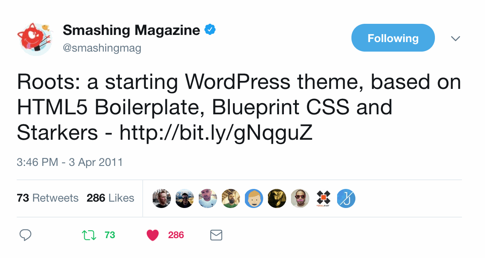
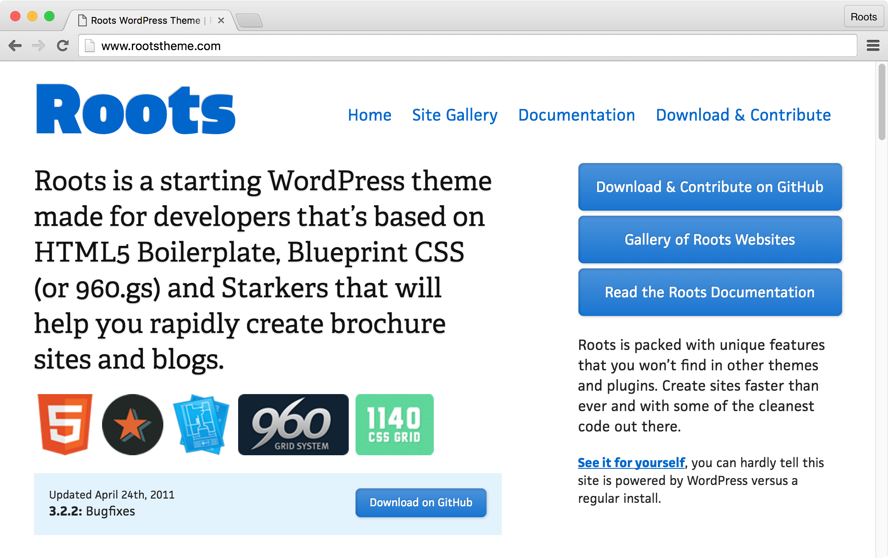

What is Sage?
Sage is a WordPress starter theme. Sage was first called Roots and initially released in early 2011.
I created Roots when I was working at an agency in Northern Colorado in 2010 and had to pump out several new themes every day. I had experience with WordPress themes before that job, but I had never been in a position where I was regularly creating new themes. Previously I had been a Thesis user, but discovered that I wasn't a fan of using child themes and hooks to make changes. I quickly realized that having a bare bones theme that's ready to start customizing was the way to go.
The Roots theme started out by combining Starkers with HTML5 Boilerplate and Blueprint CSS. Starkers was one of the first 'naked' WordPress themes and was created by Elliot Jay Stocks almost 10 years ago. HTML5 Boilerplate, the most popular front-end template, was used in Roots back when it existed as Paul Irish's frontend-pro-template. Blueprint CSS and 960.gs were the most popular front-end frameworks at the time, and Blueprint was my preferred choice since it had a better starting point to work from.
On March 28th, 2011, Roots went public. Smashing Magazine tweeting about Roots, then mentioning it in their newsletter and a blog post was directly responsible for a lot of the initial success.

Over the lifetime of the project the theme has undergone lots of changes, improvements, and re-considerations of best-practices as the team has learned new things while the web moves forward.
Going back and looking at the first several major versions of the theme makes me feel embarrassed of a lot of my early decisions, including moving the uploads folder to /media/ and rewriting all theme assets to the web root. Roots was far from perfect, and to this day we still strive to improve it whenever possible.

Some of the bigger milestones include:
- Roots 3.0.0 (March 2011): First public release
- Roots 5.0.0 (February 2012): Removed all frameworks except Bootstrap
- Roots 6.0.0 (September 2012): Added theme wrapper
- Roots 6.5.0 (August 2013): Introduced a Grunt based front-end workflow
- Roots 7.0.0 (July 2014): Updated Grunt workflow, moved plugin functionality into Soil
- Sage 8.0.0 (February 2015): Renamed theme to Sage, switched from Grunt to gulp
- Sage 9.0.0 (February 2018): Replaced gulp with Webpack, new templates folder organization, Blade as a templating engine, options to use certain CSS frameworks or none
Sage is not a theme framework, it is a starter theme. You should rarely need to update it, and typically you shouldn’t create child themes from it. Being a starter theme, Sage is meant to be used as a starting point on a new project.
Sage can be implemented on any sort of WordPress installation, independent of our other primary projects (Trellis & Bedrock).
Sage combines:
- Dependency management with Composer and npm
- Asset management and optimization with Webpack
- Template inheritance with Laravel's Blade
- Modern PHP & PSR-2 coding standards
- An improved project structure
The first episode of Roots Radio, Ep 00 — Overview, gives an overview of some of the team members involvement in Roots and an overview of the different Roots projects.
In Roots Radio Ep 05 — Sage, Chris Carr, myself, Nick Fox, and Kalen Johnson dig into a bit of the Sage philosophy, what we are doing right now with Sage, and our own theming processes.
What Sage has become
Sage has evolved into a full breadth starting point for website development and spawned additional projects to support and enhance it. It has created an entire community of conversation on what web development should be and how it has sometimes lost its way. It has grown into a team of open source developers who are dedicated to making the web better.
Roots embraces the open source ethos and believes in peer production. Through our team and community, we have dedicated thousands of person-hours to building and continuously improving our projects since 2011. Over 300 contributors have come together to help make better tools for WordPress under the Roots name.
Who's working on Sage
We're still working on and using Sage because we're invested in improving WordPress and the web in general. Many people use WordPress, and we believe there is a way to use it more efficiently.
A quote from The Changelog podcast on Modern WordPress with myself and Scott Walkinshaw, which was originally said by Craig:
I think we’re all on the same page when it comes to WordPress. WordPress is a lemon, but the industry likes WordPress, so let’s make lemonade.
Craig (@QWp6t) and myself are the project leads for Sage.
Craig joined the Roots team before version 7 in mid 2014. His knowledge in PHP and JavaScript has been an enormous help in making Sage the theme that it is today.